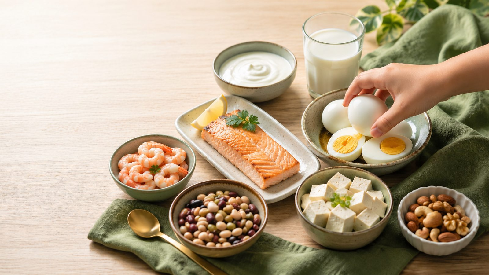

Growth science · Nutrition
Protein & height: does protein really help children grow taller?
Dietary protein is one of the most important building blocks for childhood growth — without enough of it, normal growth becomes difficult. But a stubborn myth persists: that protein is a dial you can turn up to add height, and that feeding a child twice as much makes them taller. It doesn't.
Protein is fuel and an endocrine trigger — it supplies the raw materials for new tissue and keeps the growth-hormone pathway running, so a child can grow toward the height their genes already set. Once a child gets enough good-quality protein, more does not buy extra centimetres. Height is the output of a whole system — genetics, hormones, sleep, nutrition, health, activity, and pubertal timing. Protein is one essential piece, not the whole picture. If you read only one section, read Protein 101.
Protein 101: a quick primer for parents
What protein actually is. Protein isn't a single substance — it's a category. Every protein is a long chain of smaller units called amino acids. The body uses 20 of them to build everything from muscle and bone to enzymes and hormones. Digestion snips the chains back into individual amino acids, which the body reassembles into its own proteins — like melting down Lego and building a new model.
The nine that matter most. The body can make 11 amino acids itself. The other nine are "essential" — they must come from food daily, because the body can't make them or store them for long. These nine decide whether a food can fully support growth.
Protein turnover. The body constantly breaks down and rebuilds its own proteins. Adults break even; a growing child must run a surplus — which is why a steady daily supply matters.
Complete vs. incomplete. A complete protein has all nine essentials in good proportion (eggs, milk, meat, fish). Most single plant foods are low in one — the limiting amino acid (grains are low in lysine; legumes low in methionine). The fix is complementary proteins: pair a grain with a legume (rice + beans, dhal + rice) and each covers the other's gap.
How quality is scored. Researchers rank protein quality by amino-acid match and digestibility. The FAO's current gold standard is DIAAS, which replaced PDCAAS.[17] In plain terms: eggs, milk, and whey score at the top; soy is the strongest common plant protein; single cereals and legumes score lower alone but rise sharply when combined.
Leucine — the "on switch." One essential amino acid, leucine, is both a building block and a signal that flips on muscle-building machinery (the mTOR pathway). Animal proteins and soy are especially leucine-rich.
1. The blueprint vs. the bricks
Growing children constantly build new tissue, so they need a steady supply of amino acids. Picture building a house: genetics is the blueprint (the mid-parental target height), hormones are the workers, deep sleep is the recovery window, and nutrition supplies the materials — with protein as the primary construction material.
2. The hormonal bridge: protein and the IGF-1 axis
One of the clearest findings in growth science is the link between protein and Insulin-like Growth Factor 1 (IGF-1) — the hormone that drives cell division in the growth plates.[1]
Children's protein intake influences circulating IGF-1, and animal protein in particular is associated with higher IGF-1.[1][9] But this doesn't mean more protein means more height — it means protein keeps the engine fuelled so bones can lengthen toward their potential. Above a healthy intake, pushing IGF-1 higher does not translate into a taller adult, and high protein intake shows no linear-growth benefit once needs are met.[5]
3. Quality, not just quantity: amino acids and stunting
Here's a finding that reframes everything. When researchers compared stunted and non-stunted young children, the stunted ones had lower blood levels of all nine essential amino acids — chronic growth failure tracks not just with how much protein, but with the specific essential amino acids a high-quality protein provides.[15] The message for a well-fed child: adequacy comes from quality and variety, not from piling on grams.
4. The early protein hypothesis and growth trajectories
The early protein hypothesis holds that protein in the first years shapes early weight gain and growth trajectories.[2] A clue comes from breast milk itself — only ~5–8% of its energy is protein, far less than most formulas.[13] Timing is everything:
- Infancy & toddlerhood (0–2 y). A large protein surplus over-stimulates the insulin–IGF-1 axis. A landmark RCT found infants on lower-protein formula had a lower BMI and obesity risk at school age, with no cost to healthy growth.[8] Early surplus shifts the trajectory toward more body fat later[4] — not a taller adult.
- Middle childhood (3+ y). Protein stays essential for fat-free mass, but overloading a healthy child won't accelerate linear height beyond their genetic target.
5. Animal vs. plant protein — the honest comparison
Animal proteins are complete, highly digestible, and leucine-rich. Prospective studies show animal protein — especially dairy — correlates more strongly with higher IGF-1 and healthy growth than single plant sources,[6][9] and an RCT confirmed milk protein raises growth factors.[7]
Plant proteins are nutrient-dense but often low in one essential amino acid alone — so variety is key. Well-planned vegetarian and vegan diets are recognised as adequate for all stages of childhood, with normal growth and IGF-1, when complementary sources are combined.[10]
A rough quality scoreboard (from the DIAAS framework[17]):
| Tier | Foods | Note |
|---|---|---|
| Top (reference) | Egg, milk, dairy, whey | Complete, highly digestible, leucine-rich |
| Strong | Soy / tofu, meat, fish | Complete or near-complete |
| Good, but combine | Lentils, beans, chickpeas | Low in methionine — pair with grains |
| Good, but combine | Rice, wheat, oats | Low in lysine — pair with legumes |
The honest takeaway: dairy and animal protein have a measurable edge on IGF-1 and growth signalling, but a thoughtfully varied plant-based diet reaches the same outcomes. Neither makes a child taller than their genes allow.
6. The milk question: does milk actually make kids taller?
The honest answer is a qualified yes — small, and it depends on the child. A meta-analysis of controlled trials found adding dairy produced on average about 0.4 cm of extra growth per year for roughly every 245 mL (one glass) of milk per day — with the effect largest in children who were shorter-for-age or undernourished.[12] Reviews of milk and linear growth agree: the strongest effects are in undernourished populations, working partly through IGF-1.[14] In an already well-nourished child, the marginal effect is smaller, and more milk isn't proportionally more height. Milk is a genuinely useful growth food — but not a height lever to be maximised.
7. Protein and bone — not just height
Height is bone length, but protein matters for bone strength too — and there's a myth to kill: that protein (especially animal) harms bone by making the body acidic. The evidence points the other way. Dietary protein is an essential nutrient for bone health: it increases IGF-1, improves calcium absorption, and supports the muscle that loads the skeleton.[16] Protein builds the collagen scaffold; calcium hardens it. Skimping on protein to "protect" bones is backwards.
8. How much protein do children actually need?
The official baseline (RDA, from the IOM Dietary Reference Intakes) is lower than most parents assume — and most children already exceed it:[11]
- Ages 4–8: ~19 g/day
- Ages 9–13: ~34 g/day
- Ages 14–18: ~46 g/day (girls) to ~52 g/day (boys)
Per body weight, that's roughly 0.95 g/kg/day in childhood. Many dietitians work to a slightly higher 1.0–1.5 g/kg/day for active kids, spread across the day. A 20 kg child does well on ~20–30 g of good-quality protein — easily reached with ordinary food, no supplement.
A day of adequate protein (for a ~20 kg child): Omnivore — 1 egg (~6 g) + a cup of milk (~8 g) + a palm-sized piece of chicken or fish (~12 g) ≈ 26 g. Plant-based — a bowl of dhal (~9 g) + tofu in a stir-fry (~10 g) + rice and a handful of nuts (~7 g) ≈ 26 g, with the grain-legume pairing covering the amino acids.
9. Common mistakes parents make
- Treating protein as a standalone dial. A powder can't help if sleep is short — the growth-hormone pulses that use protein happen in deep sleep.
- Supplements over whole foods. An egg or piece of fish delivers protein inside a matrix of zinc, iron, calcium, and B-vitamins that shakes lack.
- Chasing grams instead of quality. A big plate of one low-quality staple can miss key amino acids.
- Comparing different genetics. Protein helps a child reach their potential, not a taller classmate's.
- "More is better." Beyond adequate intake, extra protein becomes energy or body fat — not height.
10. Quick answers to common questions
My child is a picky eater — are they getting enough protein?
Probably, if they eat any eggs, dairy, meat, fish, beans, or soy across the week. Deficiency is rare in well-fed countries; the RDA is genuinely modest.[3]
Should I give my child a protein shake or powder?
For a healthy child eating normal food, no — it adds cost and calories without adding height. Whole foods bring co-nutrients that powders lack.
Do vegetarian or vegan kids need extra protein?
Not extra quantity, but attention to variety — grains + legumes, plus soy — and the usual plant-diet nutrients (B12, iron, zinc).
Does loading protein at dinner help my child grow overnight?
Spreading protein across the day is more useful, and the overnight growth-hormone surge depends on deep sleep, not a big dinner.
My child drinks lots of milk — will that make them tall?
Milk is high-quality, and in shorter-for-age children adds a little height. In a well-nourished child the effect is small; extra milk mostly adds calories.
11. How this connects to the whole system
GrowSense never looks at protein in isolation, because the body doesn't either. A child can eat a flawless balance of amino acids, but if they're chronically sleep-deprived, get little weight-bearing activity, or have an advanced bone age, they may still fall short of their potential — and excellent sleep can't rescue a real nutritional deficiency. Linear growth is an emergent property of the whole system. The goal isn't to maximise one nutrient — it's to keep the whole environment ready so the body can grow toward the height it was designed for.
Support the whole system, not one nutrient
GrowSense connects sleep, nutrition, activity, and clinical measurements into your child's growth-readiness picture — honestly labelling what's measured versus estimated, and setting protein targets to your child's own age and weight. Not to promise centimetres, but to help the body be ready to grow toward its potential.
Explore GrowSenseReferences
- Switkowski KM, Jacques PF, Must A, Fleisch A, Oken E. Associations of protein intake in early childhood with body composition, height, and insulin-like growth factor I in mid-childhood and early adolescence. Am J Clin Nutr. 2019;109(4):1154–1163. PMID: 30869114.
- Braun KV, Erler NS, Kiefte-de Jong JC, et al. Dietary Intake of Protein in Early Childhood Is Associated with Growth Trajectories between 1 and 9 Years of Age. J Nutr. 2016;146(11):2361–2367. PMID: 27733529.
- Hörnell A, Lagström H, Lande B, Thorsdottir I. Protein intake from 0 to 18 years of age and its relation to health: a systematic literature review for the 5th Nordic Nutrition Recommendations. Food Nutr Res. 2013;57:21083. PMID: 23717219.
- Stokes A, Campbell KJ, Yu HJ, et al. Protein Intake from Birth to 2 Years and Obesity Outcomes in Later Childhood and Adolescence: A Systematic Review of Prospective Cohort Studies. Adv Nutr. 2021;12(5):1863–1876. PMID: 33903896.
- Xiong T, Wu Y, Hu J, et al. Associations between High Protein Intake, Linear Growth, and Stunting in Children and Adolescents: A Cross-Sectional Study. Nutrients. 2023;15(22):4821. PMID: 38004215.
- Thorisdottir B, Gunnarsdottir I, Palsson GI, Halldorsson TI, Thorsdottir I. Animal protein intake at 12 months is associated with growth factors at the age of six. Acta Paediatr. 2014;103(5):512–517. PMID: 24471761.
- Grenov B, Larnkjær A, Ritz C, Michaelsen KF, Damsgaard CT, Mølgaard C. The effect of milk and rapeseed protein on growth factors in 7–8 year-old healthy children — a randomized controlled trial. Growth Horm IGF Res. 2021;60–61:101418. PMID: 34333391.
- Koletzko B, von Kries R, Closa R, et al. Lower protein in infant formula is associated with lower weight up to age 2 y: a randomized clinical trial. Am J Clin Nutr. 2009;89(6):1836–1845. PMID: 19386747.
- Hoppe C, Udam TR, Lauritzen L, Molgaard C, Juul A, Michaelsen KF. Animal protein intake, serum insulin-like growth factor I, and growth in healthy 2.5-y-old Danish children. Am J Clin Nutr. 2004;80(2):447–452. PMID: 15277169.
- Melina V, Craig W, Levin S. Position of the Academy of Nutrition and Dietetics: Vegetarian Diets. J Acad Nutr Diet. 2016;116(12):1970–1980. PMID: 27886704.
- Institute of Medicine (IOM), Food and Nutrition Board. Dietary Reference Intakes for Energy, Carbohydrate, Fiber, Fat, Fatty Acids, Cholesterol, Protein, and Amino Acids. Washington, DC: National Academies Press; 2005.
- de Beer H. Dairy products and physical stature: a systematic review and meta-analysis of controlled trials. Econ Hum Biol. 2012;10(3):299–309. PMID: 21890437.
- Michaelsen KF, Greer FR. Protein needs early in life and long-term health. Am J Clin Nutr. 2014;99(3):718S–722S. PMID: 24452233.
- Hoppe C, Mølgaard C, Michaelsen KF. Cow's milk and linear growth in industrialized and developing countries. Annu Rev Nutr. 2006;26:131–173. PMID: 16848703.
- Semba RD, Shardell M, Sakr Ashour FA, et al. Child stunting is associated with low circulating essential amino acids. EBioMedicine. 2016;6:246–252. PMID: 27211567.
- Bonjour JP. Dietary protein: an essential nutrient for bone health. J Am Coll Nutr. 2005;24(6 Suppl):526S–536S. PMID: 16373952.
- FAO. Dietary protein quality evaluation in human nutrition: report of an FAO Expert Consultation. FAO Food and Nutrition Paper 92. Rome: FAO; 2013.
This article is educational and does not provide medical diagnosis or treatment. Protein needs vary with a child's size, activity, and health; discuss significant dietary changes or growth concerns with a qualified pediatrician or registered dietitian.